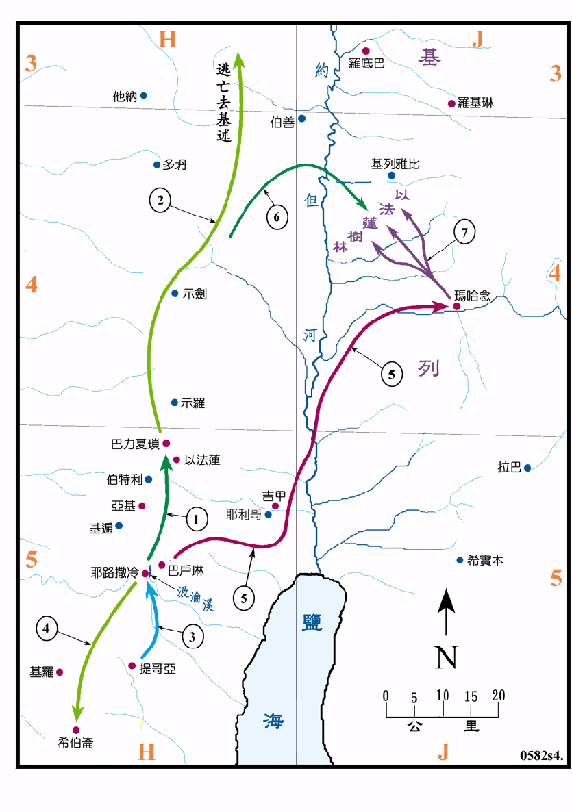

行动线说明
| 序号 | 圣经 | 说明 |
|---|---|---|
| 1 | 撒下13:23-29 | 押沙龙因暗嫩玷辱了他的妹子他玛，就请暗嫩到巴力夏琐去，在那里将暗嫩杀了。 |
| 2 | 撒下13:37-39 | 押沙龙逃到基述，投靠他的外祖父基述王，他那里住了三年。 |
| 3 | 撒下14:1-25 | 约押请了提哥亚的妇人来为押沙龙说情，大卫就准押沙龙回耶路撒冷。 |
| 4 | 撒下15:7-12 | 押沙龙到了希伯仑，开始谋反。 |
| 5 | 撒下15:13-17:24 | 大卫闻押沙龙叛，就逃到玛哈念。 |
| 6 | 撒下17:24 | 押沙龙的军队也过了约但河，到了以法莲树林。 |
| 7 | 撒下18:1-16 | 大卫的兵分成三队与押沙龙的兵交战，押沙龙兵败被杀。 |
大卫的第三个儿子押沙龙谋反，大卫就逃往河东，暂居在原扫罗儿子伊施波设的都城玛哈念，押沙龙追来河东，但是不久就被大卫击败而被杀。以法莲树林很明显的是在河东，但位置不明，应是在玛哈念以北的某一茂密的树林。